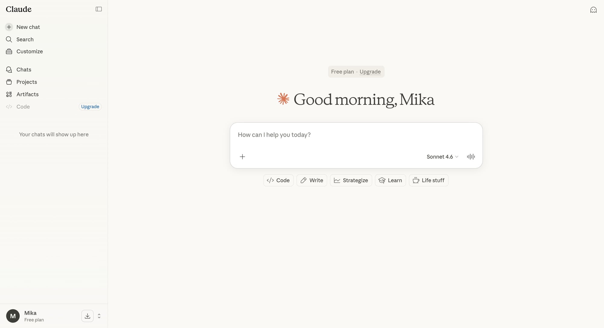
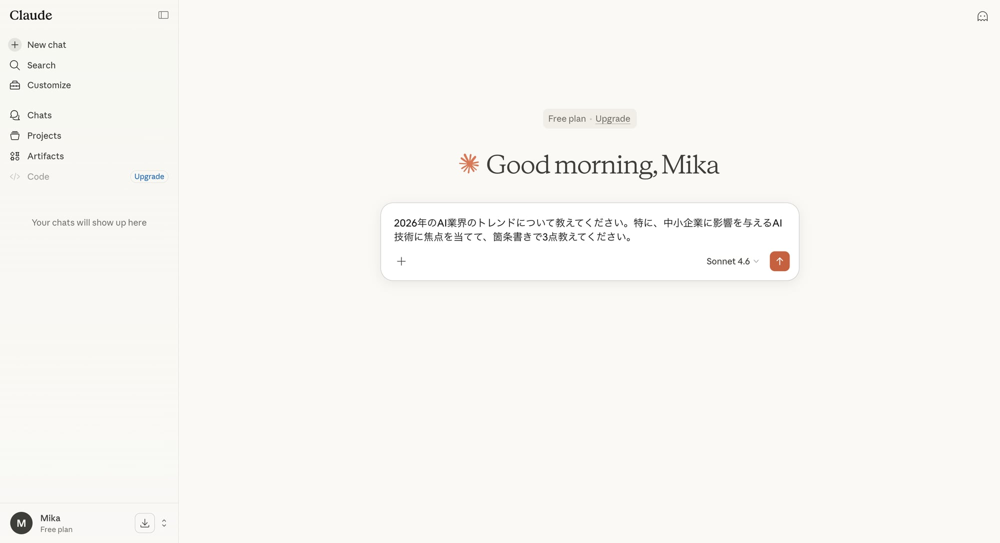

前回の記事では、ClaudeとChatGPTの決定的な違いを理解し、Claudeの「安全性」「長文読解」「推論」といった強みを知ることができました。
今日からはいよいよ実践編。Claudeのチャット画面の基本的な使い方から、AIの能力を最大限に引き出すための「プロンプト（指示文）」のコツまでを、初心者にも分かりやすく解説します。
「AIを触るのは初めて」という方も、「もっとClaudeを使いこなしたい」という方も、この記事を読めばClaudeとの会話が劇的に変わるはずです。
Claudeのチャット画面を歩く
まずはClaudeのWebインターフェースを見ていきましょう。基本的なレイアウトは他のチャットAIと似ていますが、いくつか特徴的な機能があります。

画像：Claudeのチャット画面
- 「New chat」ボタン： 新しい会話を始める際にクリックします。デリケートな内容や完全に異なるタスクを行う場合は、新しいチャットで始めた方がAIのコンテキストがクリアになり、より良い回答が得られます。
- サイドバー： 過去のチャット履歴や、最近追加された「Projects」「Artifacts」「Code」といった機能へのリンクが表示されます。特に「Projects」は、後述するComputer UseやDispatch機能の基盤となる重要な要素です。
- モデル選択（例: Sonnet 4.6）： 画面下部、入力ボックスの右上に現在使用しているモデルが表示されています。FreeプランではSonnetがメインですが、Pro/MaxプランではOpusなど上位モデルを選択できます。（※これは現時点での情報であり、Anthropicのプラン変更により異なる場合があります）
- プロンプト入力ボックス： あなたがClaudeに話しかける場所です。「Write your prompt to Claude」と表示されています。
- ファイルアップロードボタン： 入力ボックスの左にあるクリップアイコン（または＋アイコン）から、PDFファイル、テキストファイル、画像ファイルなどをアップロードできます。Claudeの長文読解力を活かす上で非常に重要な機能です。
Claudeに話しかける「プロンプトの基本」
Claudeの能力を引き出すには、適切な「プロンプト」を与えることが不可欠です。AIとの会話は、人間との会話とは少し違います。以下の5つのポイントを意識してみましょう。
1. 明確性と具体性（Clear and Specific）
曖昧な指示はAIを迷わせます。「何か書いて」ではなく、「〇〇について、□□の視点で、～文字程度で書いて」のように具体的に指示しましょう。
- 悪い例： 「日本の経済について教えて。」
- 良い例： 「2025年の日本の経済情勢について、新NISAが個人消費に与える影響に焦点を当てて、1000字程度で解説してください。ターゲット読者は投資初心者です。」
2. 文脈の提供（Provide Context）
AIは「何を話しているのか」を理解するために文脈が必要です。特に前の会話から続けて質問する場合でも、重要な情報は簡潔に再提示しましょう。
3. 役割の指定（Assign a Role）
Claudeに特定の役割（ペルソナ）を与えることで、回答の質とトーンをコントロールできます。
4. 制約条件とフォーマット（Set Constraints and Format）
出力の長さ、形式（箇条書き、表、JSONなど）、含めるべき要素や避けるべき要素を明確に指定します。
5. ファイルアップロードの活用
Claudeの最大の強みの一つである長文読解力を活かすために、関連する資料（PDF、テキストファイルなど）を積極的にアップロードしましょう。これにより、AIがより正確で深い理解に基づいた回答を生成できます。
画像：入力ボックス左の「＋」ボタンからファイルをアップロード
実践！簡単なプロンプト例
例1：PDF資料の要約
- Claudeのチャット画面でファイルアップロードボタンをクリック。
- 要約したいPDFファイルを選択してアップロード。
- プロンプトボックスに「このPDF資料の主要なポイントを300字程度で要約してください。」と入力し、送信。
例2：アイデア出し（役割指定と制約付き）

画像：具体的なプロンプトを入力している画面
- プロンプトボックスに「あなたは日本の若者向けマーケティングの専門家です。新しいAIツールを10代〜20代の女性にアピールするためのSNSキャンペーンアイデアを5つ提案してください。各アイデアには、ターゲット層に響くキャッチコピーと具体的な実施内容を含めてください。」と入力し、送信。
まとめと次回予告
今回はClaudeの基本的な使い方と、AIを賢く使うためのプロンプトの基本原則を学びました。明確な指示、文脈の提供、役割指定、制約条件の設定、そしてファイルアップロードの活用。これらのコツを意識するだけで、Claudeはあなたの強力なパートナーになるはずです。
次回は「長文読解と要約の神！「論文や資料を瞬時に理解する」実践術」と題して、Claudeの真骨頂である長文処理能力にフォーカスし、具体的な資料を効率的にインプット・アウトプットする方法を深掘りします。
#Claude #AIツール #プロンプト #入門 #使い方